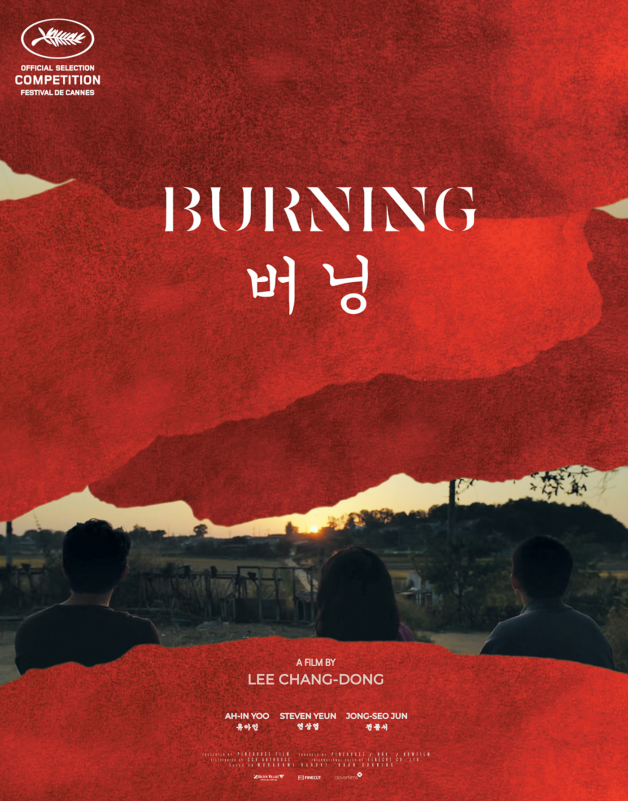

Burning is one of those words whose meaning extends far beyond fire. We instinctively associate it with flames—a chemical reaction that consumes matter until nothing remains but ash. It is visible destruction. Yet the most profound forms of burning are invisible.
Human beings burn every day.
We burn with obsession when our thoughts refuse to leave a single person or idea. We burn with jealousy when another's success feels like a reminder of our own inadequacy. We burn with anger after failing, and with ambition when the future we imagine seems just beyond our reach. The heart, though untouched by fire, experiences its own combustion.
Unlike physical fire, psychological burning leaves no smoke. It slowly feeds on memory, desire, fear, and uncertainty. The more we try to suppress it, the more intensely it smolders beneath the surface. A single unanswered question can become enough fuel to keep the mind burning for years.

Perhaps that is why Burning (2018), the movie resonates so deeply. The film uses fire not merely as an object but as a state of mind. It explores the unbearable feeling of sensing that something is terribly wrong while possessing no proof. Suspicion begins to replace certainty. Reality and imagination cease to be separate worlds and instead merge into one unsettling landscape. The audience is forced to burn alongside the protagonist, searching for truth that may never fully reveal itself.
This raises a philosophical question: does truth matter as much as belief?
If the mind becomes convinced of something, does the absence of evidence lessen the emotional fire? Or does uncertainty itself become the fuel?
Historically, people rarely act when certainty is present. They act because of what they believe, what they fear, and what they cannot let go of. Revolutions have begun with ideas. Wars have started over stories people chose to believe. Long before actions become visible, they exist as bells without a alarm within the human mind.
That may be the most unsettling meaning of burning. Fire does not always destroy from the outside. Sometimes it consumes us from within, slowly reshaping perception until obsession feels like reason and illusion feels indistinguishable from reality.
Perhaps the question has never been whether we burn.
The question is whether our fire illuminates the truth—or merely casts shadows that we mistake for it.
AT LAST BURNING (2018) inspired me to write this...
PEACE!